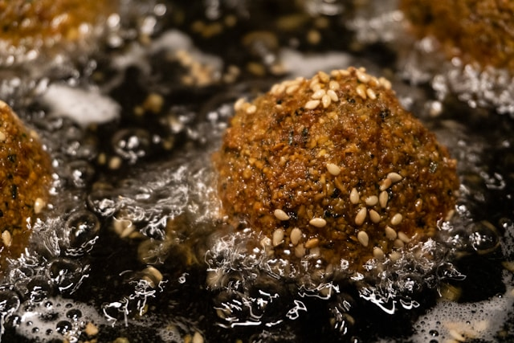

Falafel

Homemade Falafels
Craving a fresh Meditteranean plate that is filling and plant-based?
Try this tasty recipe for a quick, healthy mid-week dinner. Paired with a
creamy tahini sesame sauce, some greens and fresh veggies you'll be wondering
you'll be wondering why you thought you could only pick these up at a
restaraunt
INGREDIENTS
- Dried chickpeas
- Fresh herbs (parsley, cilantro, and dill are key)
- Onion (yellow, white, or red)
- Garlic
- Kosher salt and pepper
- spices (cumin, coriander, and a little cayenne pepper)
- Baking powder
INSTRUCTIONS
- Soak chickpeas for 24 hours. Cover them in plenty of water and add baking
soda to help soften them as they soak. The chickpeas will at least double
in size as they soak. Drain very well.
- Make mixture. Add chickpeas, fresh herbs (parsley, cilantro, and dill), garlic,
onion, and spices to food processor and pulse a little bit at a time until the
mixture is finely ground. You’ll know it’s ready when the texture is more
like coarse meal.
Important: Transfer the falafel mixture to a bowl, cover and refrigerate for at
least 1 hour or overnight. The chilled mixture will hold together better, making it easier
to form the falafel patties.
- Form patties or balls. Once the falafel mixture has been plenty chilled, stir in baking
powder and toasted sesame seeds, then scoop golf ball-sized balls and form into balls or
patties (if you go the patties route, do not flatten them too much, you want them to still
be nice and fluffy when they’re cooked.)
- Fry. Frying is the traditional way to cook falafel and yields the most authentic and best
result. Heat the oil on medium-high until it bubbles softly (your oil should be hot enough
around 375 degrees F, but not too hot that it causes the falafel to fall apart.)
Carefully drop the falafel in the oil, using a slotted spoon, and fry for 3-5 minutes until medium
brown on the outside. Avoid over-crowding the falafel; fry them in batches if necessary.